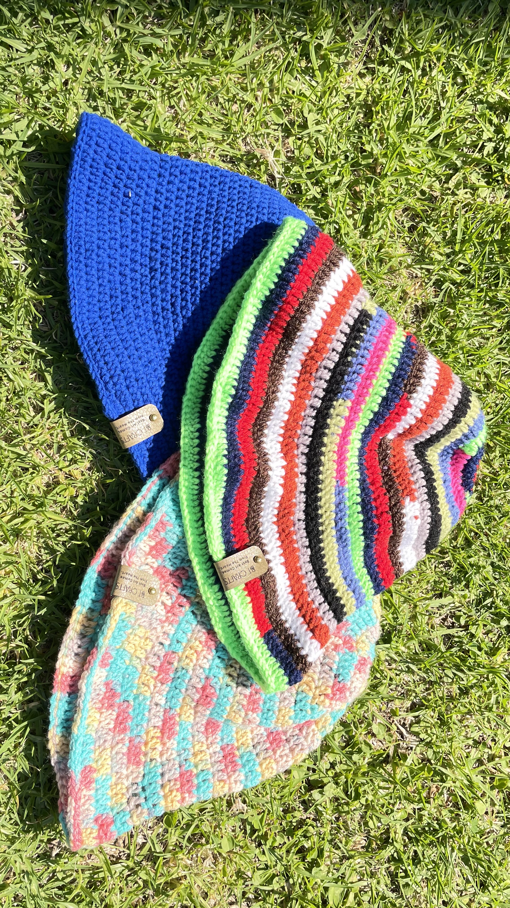
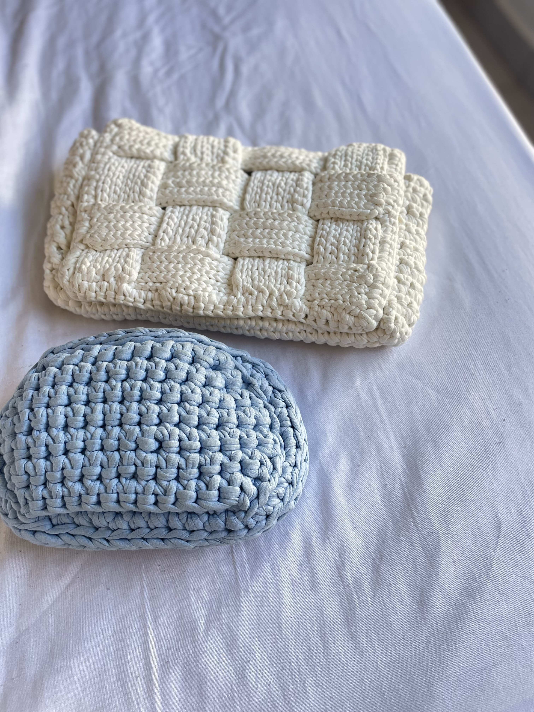
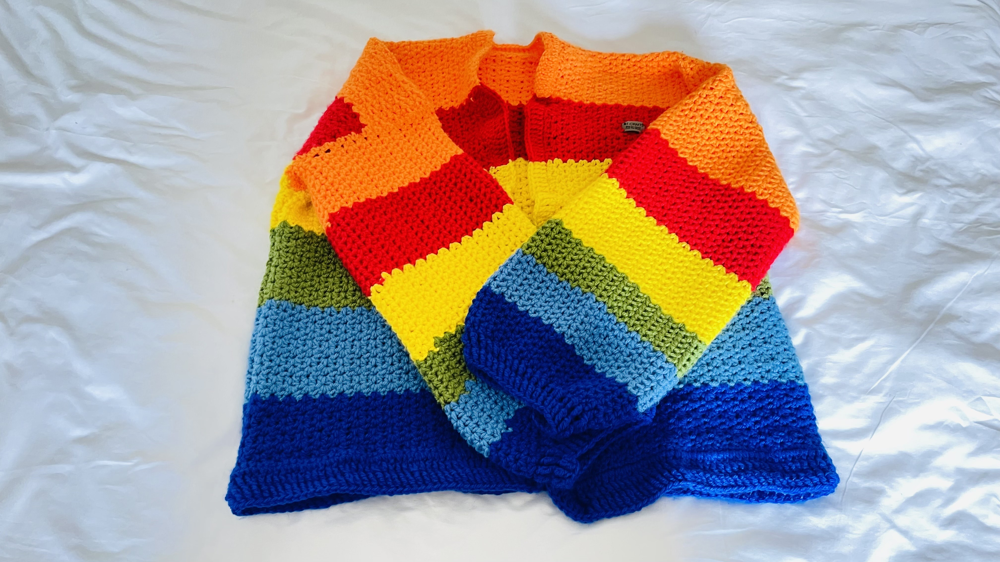
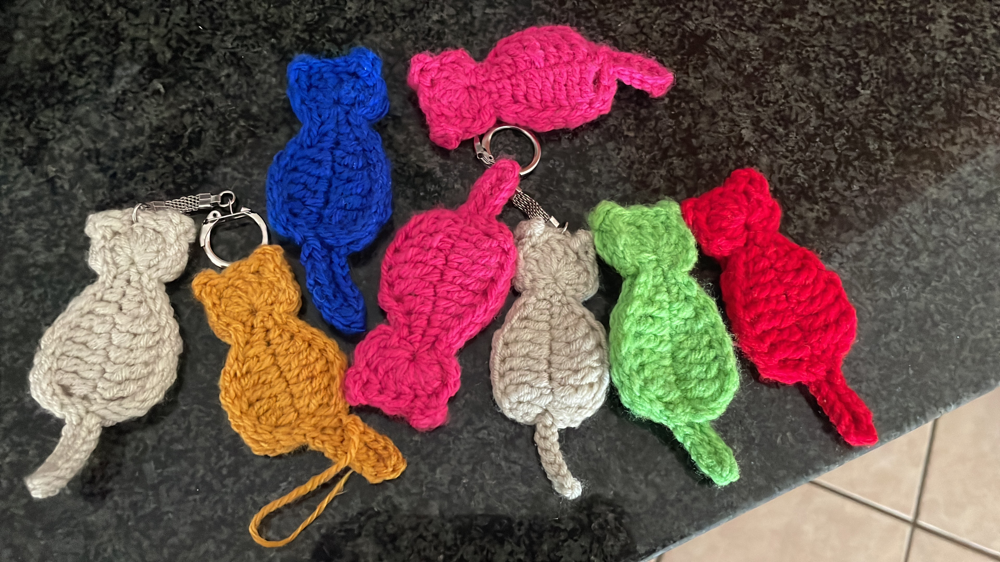

Crochet Creations 🧶




A Junior Web Developer & Crochet Enthusiast
Creating modern web designs and unique handmade crochet pieces
I'm a dedicated Junior Web Developer with a unique blend of technical expertise and artistic creativity. My journey in technology is driven by a genuine passion for creating seamless, user-friendly digital experiences that make a real difference in people's lives.
With a strong foundation in HTML, CSS, and web design, I specialize in transforming creative concepts into functional, aesthetically pleasing websites. I believe that great web development is not just about clean code—it's about understanding user needs, crafting intuitive interfaces, and delivering solutions that exceed expectations.
Beyond the digital realm, I'm an accomplished crochet artist who finds joy in creating beautiful handmade items. From stylish bucket hats to elegant handbags and decorative pieces, each creation reflects my attention to detail and commitment to quality. This artistic side of my life greatly influences my approach to web development, where I apply the same level of craftsmanship and creativity to every project.
I'm constantly expanding my skill set, staying current with the latest web technologies and design trends. Whether I'm debugging code or perfecting a crochet pattern, I bring the same dedication, problem-solving mindset, and creative thinking to everything I do.
If you’d like to reach out, please fill in the form below 👇